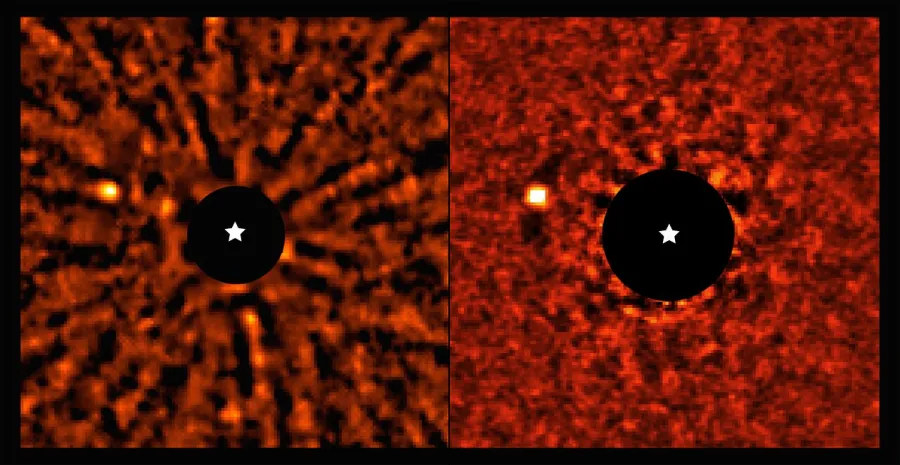

February 20, 2023
AF Leporis b: tracked down by astrometry, imaged with SPHERE
Two independent teams used the SPHERE instrument on ESO's Very Large Telescope to image a Jupiter-like planet around the star AF Leporis. Each of the two panels shows the planet as a bright dot to the left of the masked star.
The clue came from the Hipparcos and Gaia satellites: the star showed a disturbed motion on the sky. The planet has only a few Jupiter masses – according to ESO the lightest exoplanet detected by astrometry and direct imaging combined. It orbits the star at about the Saturn–Sun distance; the system is only 24 million years old.
Source: ESO Picture of the Week: "Spotting a hidden exoplanet" (potw2308a)., 2023-02-20